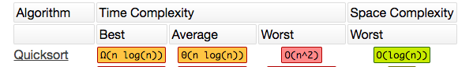

|
Quicksort is an efficient sorting algorithm, serving as a systematic method for
placing the elements of an array in order. It
is still a commonly used algorithm for sorting. When implemented well, it can be about two or three times faster than its main competitors, Merge sort and Heapsort. Quicksort is also known as a comparison sort, meaning that it can sort items of any type for which a "less-than" relation (formally, a total order) is defined. In efficient implementations it is not a stable sort, meaning that the relative order of equal sort items is not preserved. Quicksort can operate in-place on an array, requiring small additional amounts of memory to perform the sorting. 
|
| Add | |
| Sort | Desc Order |